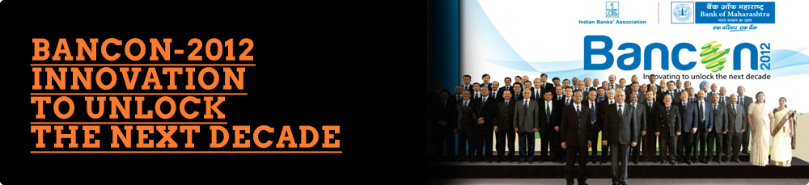
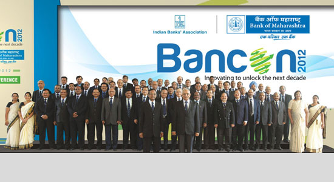
Agency Brief
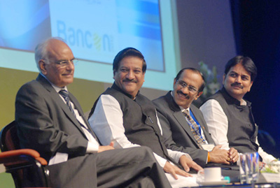
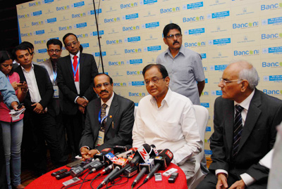
Environment
The Indian Banking Association (IBA), a conglomerate of over four hundred Indian banks co-hosts BANCON, a conference for bankers, of bankers and by bankers in partnership with a different host bank selected every year. BANCON-2012 was co-hosted by Bank of Maharashtra, at The Mariott, Pune from 23rd – 25th November, 2012 with remarkable finesse in execution that earned the bank many accolades for synchronized teamwork and a 360 degree communication approach.Bank of Maharashtra has had an excellent track record of serving its customer base and having to its credit many firsts. While highly respected, the bank’s branding and brand positioning needed an extra boost. The Bancon event, that would be graced by the Finance Minister, the Chief Minister and other dignitaries, was an ideal opportunity to create a well defined image of “trust” and “confidence” by engaging conversations on the Bank’s capabilities and performance.As communication partners to BOM, ConceptPR, an established leader in the public relations space, was ready for the challenge.
Agency Brief
To make BANCON 2012, the annual banking conference, an un-missable, ultimate experience among banking bigwigs and to make banking students aware of BANCON 2012.
Most critically, to position Bank of Maharashtra as a thought leader among its peers.
The Challenge
To project Bank of Maharashtra as a vibrant, state-of-the-art, tech savy bank that continued to maintain a culture of being the “people’s bank”, not just with consumers but largely with those in the banking and financial sector fraternity.
To ensure BANCON 2012 sets a benchmark not easily surpasable in the years to come.
The Approach
The idea was to bring together the entire banquet of services under one umbrella and synchronize the way forward backed by a methodical chronological approach. Post a detailed study of the previous two BANCON conferences, we devised a comprehensive creative strategy to standardize the branding and communication for the entire event. To ensure a 360 degree impact, teams from Concepts specialized verticals of PR, Digital, Media, Events and Creative were organized into a focused and dedicated task force, working towards a common strategy.
The Action
The team’s initiative consisted of a multi-pronged approach.
Click to Enlarge
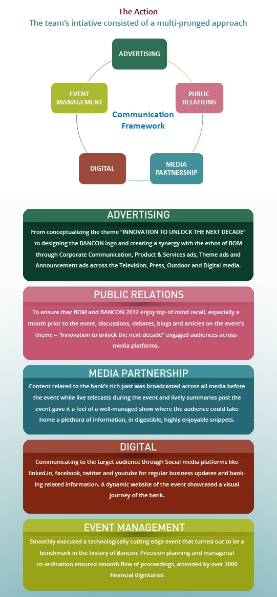THE PUBLIC RELATIONS FOOTPRINT
As india's leading financial PR firm, we recognised that our strategy had to clearly focus on optimizing visibility by exploring, exploiting and participating in every opportunity that enhanced the stature of the event and its host. The team generated strategically critical coverage that:-
- Showcased the event and Bank of Maharashtra
- Profiled the senior management team
- Built a First Information Network that would help us identify possible negative occurrences and act in advance to counter or balance them.
The action
We had almost the entire media – including foreign wires – from Mumbai covering the event, despite being the week-end.
PR teams ensured that the media persons got enough opportunities to interact with bankers and VIPs visiting the Bancon.
The biggest hit:
The state-of the-art Media Centre set up at the venue was the biggest hit. Journalists could not only file their reports on real time basis, but had many corners to conduct interviews.
Media Activities
- Press meets
- One-to-One interviews
- Press Release
- Authored articles
- Speaker Profiling
- Panel Discussion
- Non media Activity
Important Media Activities
A series of media interactions were strategically executed to give Bank of Maharashtra glory as the host of Bancon 2012.
- Select one-on-one media meets for Mahabank leadership team in Delhi and Mumbai
- Pune Editors dinner meet
- Bancon 2012 Curtain raiser press meet in Pune and main conference
- More than 100+ journalists attended the main conference (including 50+ from Mumbai) - PR Results
-More than 300+ coverage in print media nationally
-More than 50+ coverage across Electronic business channels
THE DIGITAL FOOTPRINT
As online specialists, team Darkmatter’s strategy optimized the impact of communication through social media platforms like linked.in, facebook, twitter and youtube. Tracking tools to measure and optimize performance and impact ensured highly successful digital engagement not just through the period of the event but even after.
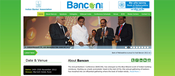www.mahabank-bancon2012.in
Discussions were initiated based on the sub-themes and the bank and event were brought into the daily radar of bankers.
Since the target audience was the hardcore banking professional, the digital team faced the challenge of creating engagement that balanced serious subjects with involving quotes and quizzes, photos and pictures that represented the ongoing mood as a festive yet serious one.
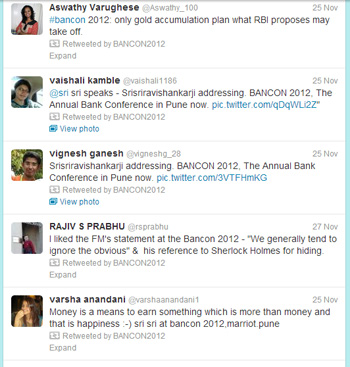Customer involvement was gauged by queries and responses on Twitter, before the event. The five updates daily consisting of quotes, Trivia Time – a fun type of quiz and conversations aimed to spread awareness about the event using search words like online banking, RBI, banks, FICCI, Government, fiscal year, policy, currency. #Bancon2012 was the Twitter handle.
The event witnessed record-breaking live Tweets- one every three minutes- enabling those who had missed out on the event to witness the excitement. A phenomenal increase was marked from 169 to 226 during the three-day event.
Videos about Bank of Maharashtra’s traditional heritage of reaching out to the common man publicized the bank as a strong institution with deep roots, before the event. Live broadcasts of interviews and media coverage at BANCON 2012; helped those who were not present at the venue to get a glimpse of the glittering function.
Well-researched blogs based on the sub-themes, were updated thrice a week to invoke curiosity and create a following. Traffic to these blogs was further accelerated through Tweets and updates on Facebook. These blogs gave a snapshot of the financial world and helped reach out to the cerebral audience with its distinctive flavor of capturing market trends and current issues. Traffic was also directed from the website, before the event.
RESULT:
Bank of Maharashtra was applauded for its efforts at making the event a success, across the financial fraternity. Bancon 2012 turned the spotlight on Bank of Maharashtra’s efficiency and expertise in the Financial services sector.
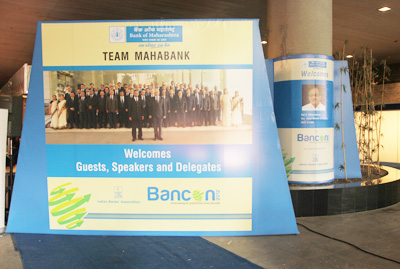
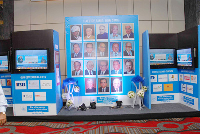
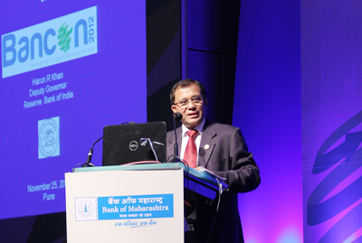
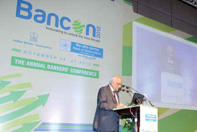
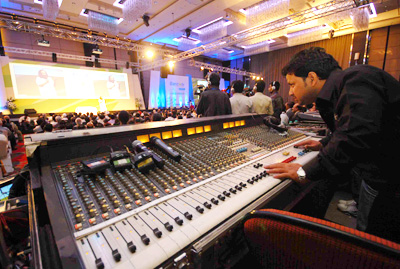
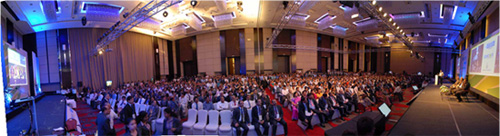
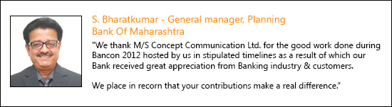